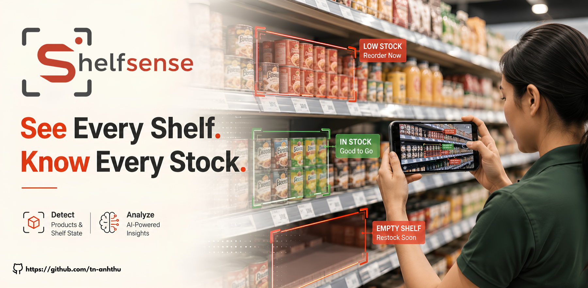
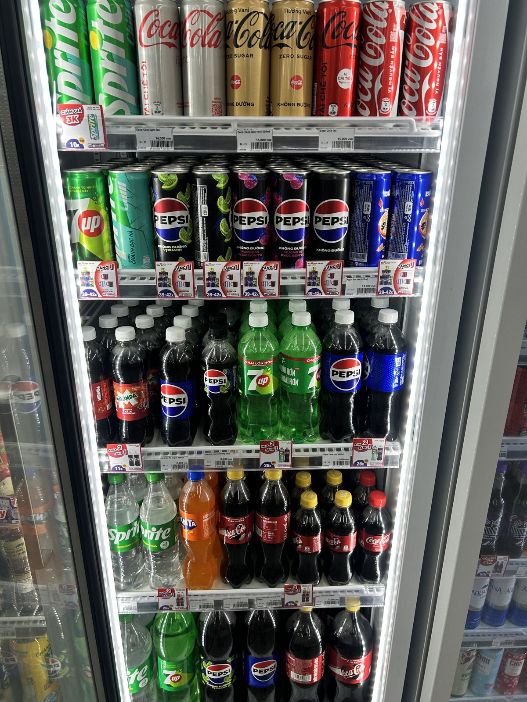
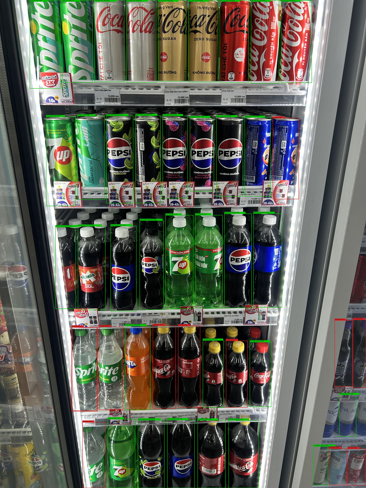
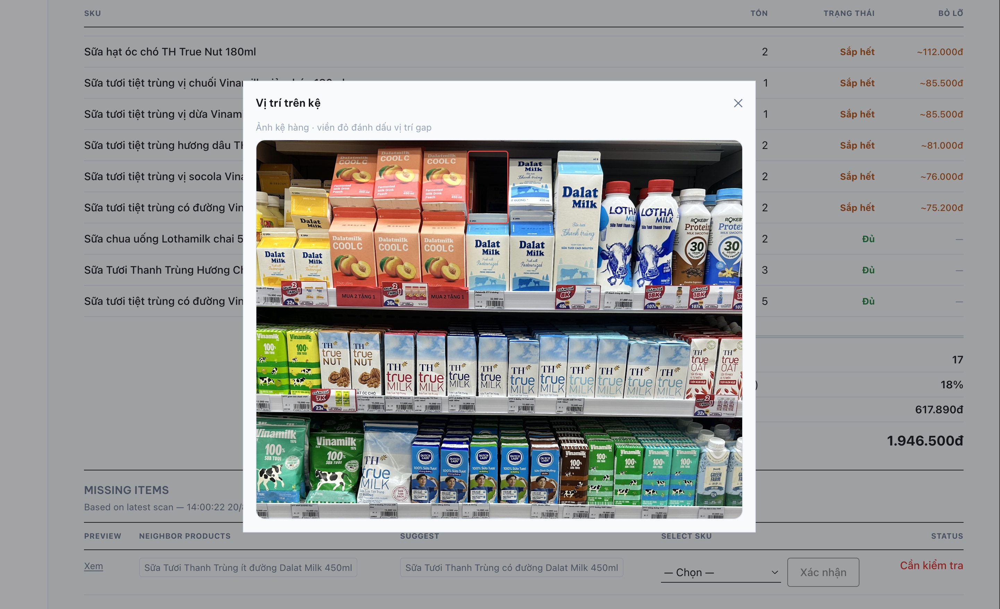

Projects · Computer Vision · Retail
ShelfSense — Shelf Stock Monitoring
Turning a phone photo of a store shelf into an automatic stock count and empty-shelf alert — no new camera hardware needed.

Problem
Why this matters
Shelf inventory in small convenience stores and minimarkets is still counted by hand. That's slow, inconsistent, and it means stock-outs get caught late — after a customer has already reached for an empty spot. The goal was to let staff photograph a shelf with a regular phone and get an automatic count, without buying dedicated camera infrastructure or an enterprise SaaS contract.
Approach
How it was built
A four-stage pipeline: Detection — YOLOv8 nano, fine-tuned on the SKU-110K dataset, locates products on the shelf. Classification — SigLIP2 embeddings match each detected product against a catalog using zero-shot similarity, chosen after benchmarking showed it outperforms CLIP on retrieval. Gap detection — geometric heuristics flag empty shelf space. Human verification — staff confirm the AI's proposed counts and enter a depth multiplier, since the system is not fully automated.
Demo scope: roughly 100 SKUs.

Raw input: a phone photo of a shelf, no special camera or angle needed.

YOLOv8 detection output — green boxes are confidently matched SKUs, red boxes are flagged for review.

The staff-facing dashboard: stock levels, a low-stock flag, and the exact shelf photo location of the gap for human verification.
Results
What the pipeline achieves
Recall 0.782
Product detection recall at a 0.6 confidence threshold
Precision 0.745
Product detection precision at the same threshold
Top-1 0.676 / Top-5 0.952
Zero-shot product classification match accuracy
Insight
Why human-in-the-loop, on purpose
Classification isn't perfect yet: similar-looking SKUs score a 0.926 embedding similarity to each other, versus 0.860 between genuinely different brands — close enough that an autonomous system would misfile stock some of the time. Rather than hide that, the design keeps a human in the loop to confirm before any reorder trigger fires. That's a smaller win than full automation, but it's one that's actually safe to ship: it still cuts the manual counting time down to a photo and a quick check, without the risk of an AI-driven false reorder.